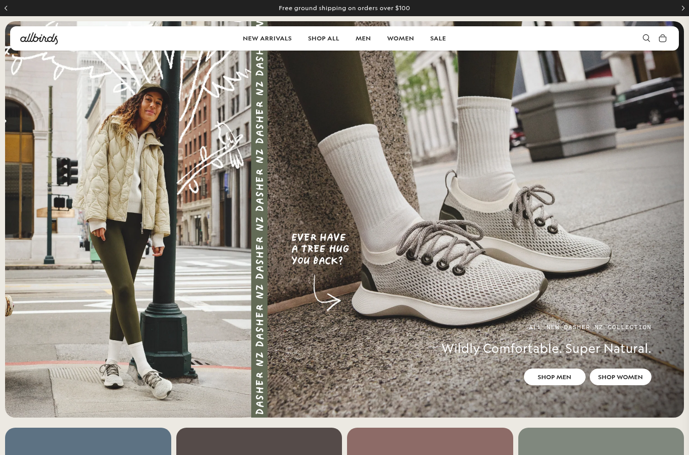

The hero contains multiple H1s that are 'blocked' messages, indicating a rendering issue that prevents visitors from seeing the intended message, causing confusion and distrust.
CURRENT — Blocked hero

⚠ Blocked content misdirectionThe homepage hero is rendering 'blocked' messages (e.g., 'shop.app is blocked') instead of the intended headline, likely due to ad blockers or script errors. This breaks the visual
Step into natural comfort with our sustainable footwear.
Shop All
✓ Clear heroThe hero now displays the intended message without any 'blocked' placeholders.
FixReplace the client-side rendered hero with server-side rendering or use fallback text that is not blocked by ad blockers. Ensure the hero always displays the intended headline 'Wildly Comfortable. Super Natural.' and a supporting subheadline. This guarantees the message is visible to all visitors, restoring credibility and clarity. The change is low-effort and directly addresses the rendering defect.
Evidence
Observed on the live site
✓ Flagged independently by 4 of 7 analysts
H1s include: 'shop.app is blocked', 'www.allbirds.com is blocked' (repeated 4 times)
H1s include 'shop.app is blocked' and 'www.allbirds.com is blocked' repeated five times; body sample shows 'shop.app is blocked' and 'www.allbirds.com is blocked'.
H1s include 'shop.app is blocked' and multiple 'www.allbirds.com is blocked'; title is 'shop.app' instead of Allbirds; no meta description or canonical.
SEO title: 'shop.app', H1s: 'shop.app is blocked', 'www.allbirds.com is blocked' (repeated 4 times).
Business case
If this change wins
$70,762 – $283,046
annual opportunity if it wins
Low
Effort — 0.5-2 days
40 days
A/B test duration
Prioritisation
PXL score: 5 / 10
Question
Answer
Points
Is the change above the fold?
Yes
1
Is the change noticeable in under 5 seconds?
Yes
2
Does it add or remove an element?
Yes
1
Does it run on a high-traffic page?
Yes
1
Discovered via user testing?
No
0
Discovered via qualitative feedback (survey, support)?
No
0
Supported by heatmaps or session recordings?
No
0
Found via digital analytics or real-user field data?
The hero contains multiple H1s that are 'blocked' messages, indicating a rendering issue that prevents visitors from seeing the intended message, causing confusion and distrust.
Current state
h1: Wildly Comfortable. Super Natural. (plus 5 blocked messages); cta: Shop All; notes: The presence of 'blocked' messages in the H1s suggests that the hero section is not loading correctly for some visitors, potentially due to ad blockers or script errors, which undermines the credibility of the page.
Change
h1: Wildly Comfortable. Super Natural.; cta: Shop All; notes: Ensure the hero content is server-side rendered or uses fallback text that is not blocked by ad blockers. The hero should always display the intended message without any 'blocked' placeholders.
Acceptance criteria
GIVEN a first-time visitor on the affected page
WHEN the change is live
THEN Ensure the hero content is server-side rendered or uses fallback text that is not blocked by ad blockers. The hero should always display the intended message without any 'blocked' placeholders,
with no regression at 375px and 1280px widths.
Tracking
event: cro_blocked_content_misdirection on interaction with the
changed element; verify it fires in BOTH variants before opening traffic.
Success metric
conversion rate + bounce rate on the affected page
QA checklist
Chrome / Safari / Firefox · 375px + 1280px ·
keyboard reachable · screen-reader name present · no CLS introduced
Effort
Low —
0.5-2 days
Test plan
118,817 visitors per variant
(95% significance, 80% power);
40 days.
Rollback
Feature-flag the change; revert the flag if the primary metric
drops for 3 consecutive days.
annual visits × baseline conversion × relative lift × order value
= 2,160,000 annual visits x 2.10% conversion x 2.0-8.0% relative lift x $78 order value
The 2.0–8.0% relative-lift band is an assumption bounded by severity (Urgent), not a prediction.
Why the range is conservative: Across 127,000 experiments, 12% produced a statistically significant improvement on the primary metric; a healthy programme win rate is 10-30%. Winning tests also overstate their true effect, so treat this as the prize if the change works — never expected revenue.
How effort is estimated
Bracket
Days
Typical scope
Low
0.5–2
copy, colour, labels, image swaps
Medium
2–5
layout shifts, form changes, new modules
High
5+
personalisation, funnel work, integrations
Assigned by matching the recommended change against these scopes; the estimate is a bracket, not a quote.
Sample size math
Two-proportion z-test, the standard pre-test sample-size calculation:
n = [z₀.₀₂₅·√(2·p̄·(1−p̄)) + z₀.₂₀·√(p₁(1−p₁)+p₂(1−p₂))]² / (p₁−p₂)²
Baseline conversion
2.1%
Significance / power
95% / 80%
Sample per variant, 8.0% lift
118,817
Sample per variant, 2.0% lift
1,847,435
Halving the minimum detectable effect roughly quadruples the sample required, which is why the conservative figure is so much larger.
What PXL is
PXL is CXL's prioritisation framework: binary questions instead of subjective 1–10 guesses, weighted toward evidence.
Findings discovered by inspection score zero on all four evidence questions — that is the honest signal, not a defect. Findings verified by direct measurement earn the extension point and, where real-user field data is involved, the analytics point.